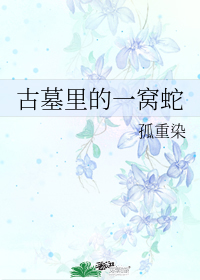

Como humano renacido como víbora, todos los aspectos de la vida de Yin Xiaoxiao eran hermosos excepto cuando se trataba de comida.
Como una serpiente plateada (Yin) que se encuentra con una serpiente de tinta (Mo), Yin Xiaoxiao podía aceptar cualquiera que fuera el clan de su marido.
Como una víbora sin recuerdos heredados, Yin Xiaoxiao descubrió que la tumba antigua y todos los diferentes clanes de serpientes realmente podían estresar a una serpiente.
En resumen, la vida de Yin Xiaoxiao no es más que esto: diferentes clanes de víboras se casan. La antigua tumba está gobernada por el clan de su vecino de al lado. Mi cónyuge, Heitan, esta preciosa y traviesa serpiente, me preocupa.
En realidad, esta es la historia de una pequeña serpiente negra malvada que adora a una pequeña y tonta serpiente plateada confusa.
Jefe Mo: Yin Xiaoxiao, ¡has vuelto a robar miel!
Yin Xiaoxiao: ¡Definitivamente fueron tus hijos quienes se lo comieron!
Serpientes bebés: ¡Papá es una serpiente mentirosa!